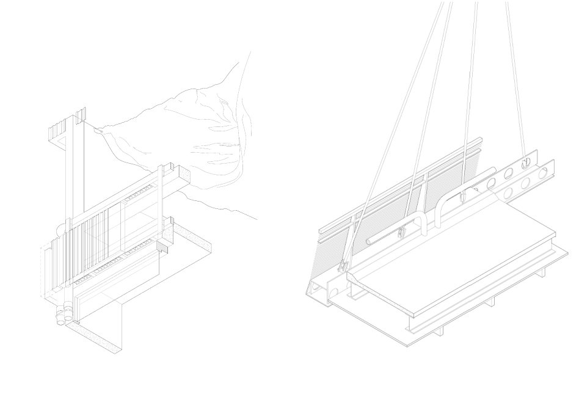

The Anthropological Carpark

This project is derived from questions revolving around the widely accepted ideology in contemporary era which suggests nature is a bystander or a product to be consumed by users. Our project is an attempt to challenge this notion. This has been done in the project by creating a single volumetric block that hides or conceals this possibility of circuits catered for each group of audiences. The building considers the path or the entrance an audience take to judge this person’s value. The structure, material in the building will shift as the driver or person moves along the block, the building will treat the individual following its own understanding of hierarchy in people. This audacious and judgemental act of the building can be applied to how contemporary people judge nature and technology using our standards we have created (whether they are real or not), to determine what is important or precious like how we take care of some nature for example, gems but not rocks.

Programmatic diagram explaining multiple agendas an indiviudal may have entering the car park and the rhythm of the movement of the each indivdiuals vitals - speed, purpose, level of relaxation or urgency.

The details further suggest the architecture considers vehicles, human and the working class as 3 types of audiences they need to adjust to. Looking at the detail on the left shows unconventional fabric canopy being the only protective layer in the roof floor parking which start to reveal moments of inequality. The hanging moment of the right detail shows our play of levels to create zones for safety and operation of the building.

There are subtle changes in the plans and sections shows the experiences. The drawings post-production techniques to represent contrasting moments. Material, level of light, structure like arches, and level parking spaces allocated to the zones are all accumulated into supporting our statement.